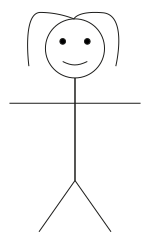

Jacquie : hey doc, j’aim…
Emmett : Marty nous devons retourner dans le passé pour…
Jacquie : doc je t’arête tout de suit je ne m’appelle pas Marty et je suis venue te demander des conseille pour mon date avec Michel. J’ai entendu dire qu’il serait possible de traiter les IST.
Emmett : en effet, il est possible de traitait certaine IST. Par exemple si tu es atteint du SIDA, tu peux suivre une trithérapie pour ainsi avoir un durée et une qualité de vie normale.
Emmett : qui plus est en suivant cette thérapie il n’y a plus de risque de contaminé ton partenaire ;
Emmett : il existe aussi certain traitement pour éviter d’être contaminé tels que la PrEP et des traitements en cas d’urgence, par exemple si le préservatif crac tels que le TPE.
Emmett : le TPE et disponible au service d’urgence en cas de prise de risque involontaire.
Jacquie : merci pour tous ces conseil doc.
Jacquie : tien je n’ai toujours pas parler à Arthur si je lui demandé conseille.